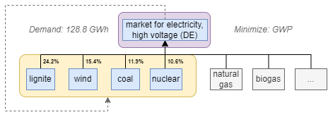

PULPO Tutorial. This notebook showcases the optimization of the German electricity mix. First, the basic functionalities are demonstrated. Advanced functionalities are also shown later in the notebook.
Written by Fabian Lechtenberg, 18.09.2023 Last Update: 15.12.2023
(1) Selection of LCI Data
PULPO Electricity Showcase#
Import a couple of necessary Python packages. The “sys.path.append(‘../’)” is only necessary if you forked this repository.
import os
import sys
sys.path.append('../')
from pulpo import pulpo
import pandas as pd
pd.set_option('display.max_colwidth', None)
Setup#
Specify the project, database and method to be used. Also indicate the folder where the working and results data should be stored. For this example to work, you need a project “pulpo” with a database “cutoff38”, which is the ecoinvent 3.8 cutoff system model.
# Ask the user for input
version = input("Enter version (bw2 or bw25): ")
# Set variables based on user input
if version == "bw2":
project = "pulpo"
database = "cutoff38"
methods = "('IPCC 2013', 'climate change', 'GWP 100a')"
elif version == "bw25":
project = "pulpo_bw25"
database = "ecoinvent-3.8-cutoff"
methods = "('ecoinvent-3.8', 'IPCC 2013', 'climate change', 'GWP 100a')"
else:
raise ValueError("Invalid version specified. Please enter 'pulpo' or 'pulpo_bw25'.")
print(f"Set to: project={project}, database={database}, methods={methods}")
Set to: project=pulpo_bw25, database=ecoinvent-3.8-cutoff, methods=('ecoinvent-3.8', 'IPCC 2013', 'climate change', 'GWP 100a')
# Substitute with your working directory of choice
notebook_dir = os.path.dirname(os.getcwd())
directory = os.path.join(notebook_dir, 'data')
# Substitute with your GAMS path
GAMS_PATH = r"C:\APPS\GAMS\win64\40.1\gams.exe"
Create a pulpo object called “pulpo_worker”. This object is an element of the class “PulpoOptimizer”, a class that links the different utilitiy modules containing code for retrieving, preparing and adjusting the data, preparing and running the optimization problem, as well as saving the results.
pulpo_worker = pulpo.PulpoOptimizer(project, database, methods, directory)
if version=="bw25":
pulpo_worker.intervention_matrix="ecoinvent-3.8-biosphere"
Retrieve the data LCI data:
pulpo_worker.get_lci_data()
(2) User Specifications

Specify the functional unit#
Retrieve the market activity for high voltage electricity in Germany. Use the function “retrieve_activities” for this purpose. The function takes 4 optional arguments:
‚Äúkeys‚Äù (üîë) ‚Äì> ‚Äúactivities‚Äù (‚öôÔ∏è) ‚Äì> ‚Äúreference_products‚Äù (üì¶) ‚Äì> ‚Äúlocations‚Äù (üó∫Ô∏è).
The activities are retrieved by this order.
Since the key is unique, a single activity for each passed key will be returned. Activity names, reference_product and locations are not unique, so the best match for the passed data will be returned.
Passing keys üîë#
Keys can be obtained e.g. directly from activity browser and several keys can be passed at the same time.
keys = ["('cutoff38', '962727b9a36bcaa186f222b29b57f6a3')", "('cutoff38', '473d4bb488e8f903b58203f3e5161636')"]
pulpo_worker.retrieve_activities(keys=keys)
Passing activity name (‚öôÔ∏è), reference_product (üì¶) and/or location (üó∫Ô∏è)#
Instead of passing the keys, a combination of activities, reference_products and locations can be passed. A best match (all existing combinations) will be returned.
activities = ["market for electricity, high voltage"]
reference_products = ["electricity, high voltage"]
locations = ["DE"]
It is also possible to pass only partial information such as only reference product or only activity name:
pulpo_worker.retrieve_activities(activities=activities)[0:5]
pulpo_worker.retrieve_activities(reference_products=reference_products)[0:5]
Let’s retrieve the activity of our functional unit and specify the demand as a dictionary:
electricity_market = pulpo_worker.retrieve_activities(activities=activities, reference_products=reference_products, locations=locations)
electricity_market
Setting a demand of 128,819.0 GWh of electricity according to Germany electricity demand 2018
demand = {electricity_market[0]: 1.28819e+11}
Specify the choices#
The choices are specified similar to the demand / functional unit. First, search for the processes with equivalent products:
activities = ["electricity production, lignite",
"electricity production, hard coal",
"electricity production, nuclear, pressure water reactor",
"electricity production, wind, 1-3MW turbine, onshore"]
reference_products = ["electricity, high voltage"]
locations = ["DE"]
electricity_activities = pulpo_worker.retrieve_activities(activities=activities, reference_products=reference_products, locations=locations)
electricity_activities
These are the currently four most employed technologies for electricity production in Germany (lignite: 24.2%, wind: 15.4%, coal: 11.9%, nuclear: 10.6%) according to the “market for electricity, high voltage (DE)”
Specify also the choices as a dictionary. Be aware, that this time we are dealing with a dictionary of dictionaries. Each inner dictionary corresponds to one type of choice in the background! Here, we only consider choices between electricity production activities, so we assign the key “electricity” to the equivalent product they produce.
The assigned value in the inner dictionary is the capacity limit of this activity, which for now is set to a very high value, to consider an unconstrained situation.
choices = {'electricity': {electricity_activities[0]: 1e16,
electricity_activities[1]: 1e16,
electricity_activities[2]: 1e16,
electricity_activities[3]: 1e16}}
(3) Solution
Instantiate the worker#
instance = pulpo_worker.instantiate(choices=choices, demand=demand)
Solve the instance#
When specifying a valid GAMS_PATH with a licence for CPLEX, as shown below, CPLEX with fine-tuned parameters is automatically selected to solve the Linear Problem (LP).
If no GAMS_PATH is specified, the “HiGHS” solver is automatically used. It has almost double the run time of “CPLEX” and fails to solve the problem in a couple of instances.
#results = pulpo_worker.solve()
# Alternatively using GAMS (cplex) solvers:
results = pulpo_worker.solve(GAMS_PATH=GAMS_PATH)
Save and summarize the results üíæüìà#
The “save_results()” function will save the results in an processed format to an excel file in the data folder that has been specified at the beginning.
pulpo_worker.save_results(choices=choices, demand=demand, name='electricity_showcase_results.xlsx')
You can inspect the generated excel file.
There is another function to summarize the results in dataframe form within jupyter notbeooks called “summarize_results”. This function has similar inputs to the “save_results” function, but does not require the specification of a filename. Additionally, by specifying the “zeroes” parameter to “True” all the not-selected choices are omitted in the summary.
pulpo_worker.summarize_results(choices=choices, demand=demand, zeroes=True)
This is the end of the very basic PULPO functionalities using the electricity case study.
The following sections will dive deeper into additional functionalities.
Additional Constraints
Technosphere Flows#
Let’s assess what happens if the “electricity production, nuclear, pressure water reactor | electricity, high voltage | DE” activity is indirectly constrained trough a restriction on “nuclear fuel element, for pressure water reactor, UO2 4.0% & MOX”
activities = ["market for nuclear fuel element, for pressure water reactor, UO2 4.0% & MOX"]
reference_products = ["nuclear fuel element, for pressure water reactor, UO2 4.0% & MOX"]
locations = ["GLO"]
nuclear_fuel = pulpo_worker.retrieve_activities(activities=activities, reference_products=reference_products, locations=locations)
nuclear_fuel
upper_limit = {nuclear_fuel[0]: 100000}
The rationale behind choosing this activity and this limit is based on inspection of the scaling vector of the previous results. This activity is limiting for the nuclear electricity activity but not for the others, so, to enforce a different result than before (for demonstration purpose), this activity is constrained.
pulpo_worker.instantiate(choices=choices, demand=demand, upper_limit=upper_limit)
results = pulpo_worker.solve()
pulpo_worker.summarize_results(choices=choices, demand=demand, constraints=upper_limit)
As can be seen from the summary above, part of the final electricity demand is supplied by the wind turbine processes, because the nuclear electricity process is constrained by the nuclear fuel process. It is also evident that the impact is higher than the previous one, as the GWP minimizing process (nuclear) can no longer supply the full demand.
Elementary Flows#
Apart from technosphere flows, elementary flows may also be constrained. This could be a limitation on the extraction of raw materials or the emission of a certain compound. In this case study, we limit the emission of Radon-22:
elem = pulpo_worker.retrieve_envflows(activities='Radon-222')
elem
As can be seen from the results of the previous assessment, the “low population density, long-term” emission is the largest elementary flow with 3.69x1E13 kg Becquerel. For testing purpose, we limit this emissio to 5.00x1E12 kg Becquerel:
elem = [flow for flow in elem if 'long-term' in str(flow)]
elem_limit = {elem[0]: 5e12}
instance = pulpo_worker.instantiate(choices=choices, demand=demand, upper_elem_limit=elem_limit)
results = pulpo_worker.solve()
pulpo_worker.save_results(choices=choices, demand=demand, name='electricity_showcase_results_elem.xlsx')
pulpo_worker.summarize_results(choices=choices, demand=demand)
As can be seen, the share of nuclear power is limited through the introduced elementary flow constraint.
Additional Methods
Let’s see how to evaluate different methods and set them as objectives, in this case evaluating the ReCiPe endpoints, and setting the human health one as objective:
methods = {
(f"('ecoinvent-3.8', {k[1:]}" if version == "bw25" else k): (1 if k == "('ReCiPe Endpoint (E,A)', 'human health', 'total')" else 0)
for k in [
"('IPCC 2013', 'climate change', 'GWP 100a')",
"('ReCiPe Endpoint (E,A)', 'resources', 'total')",
"('ReCiPe Endpoint (E,A)', 'human health', 'total')",
"('ReCiPe Endpoint (E,A)', 'ecosystem quality', 'total')"
]
}
With this, a new Pulpo worker must be created:
pulpo_worker = pulpo.PulpoOptimizer(project, database, methods, directory)
if version=="bw25":
pulpo_worker.intervention_matrix="ecoinvent-3.8-biosphere"
pulpo_worker.get_lci_data()
pulpo_worker.instantiate(choices=choices, demand=demand)
results = pulpo_worker.solve()
pulpo_worker.summarize_results(choices=choices, demand=demand, zeroes=True)
From the summary above, it can be seen that for the “human health” category, the nuclear process is not the most suitable anymore. With this objective, the wind turbine process is selected.
As another category is minimized, the GWP has changed as well: previously, with nuclear electricity the total GWP was 1.599836e+10 while with wind electricity it is 1.739234e+10.
Lower Level Decisions (Regional Choice)
In this case study, we would like to keep the current share of the electricity supplied by fossil sources the same. The choices that we consider on the electricity production level are between the coal and lignite activities:
methods = {
(f"('ecoinvent-3.8', {k[1:]}" if version == "bw25" else k): (1 if k == "('IPCC 2013', 'climate change', 'GWP 100a')" else 0)
for k in [
"('IPCC 2013', 'climate change', 'GWP 100a')",
"('ReCiPe Endpoint (E,A)', 'resources', 'total')",
"('ReCiPe Endpoint (E,A)', 'human health', 'total')",
"('ReCiPe Endpoint (E,A)', 'ecosystem quality', 'total')"
]
}
pulpo_worker = pulpo.PulpoOptimizer(project, database, methods, directory)
if version=="bw25":
pulpo_worker.intervention_matrix="ecoinvent-3.8-biosphere"
pulpo_worker.get_lci_data()
activities = ["electricity production, lignite",
"electricity production, hard coal"]
reference_products = ["electricity, high voltage"]
locations = ["DE"]
electricity_activities = pulpo_worker.retrieve_activities(activities=activities, reference_products=reference_products, locations=locations)
Instead of assessing only the technology choices, we are invetigating the best regional choice for the source of coal and lignite:
coal_activities = ["market for hard coal"]
lignite_activities = ["market for lignite"]
coal_activities = pulpo_worker.retrieve_activities(activities=coal_activities)
lignite_activities = pulpo_worker.retrieve_activities(activities=lignite_activities)
The updated choice dictionary looks like this:
choices = {'electricity': {elec: 1e16 for elec in electricity_activities},
'coal': {coal: 1e16 for coal in coal_activities},
'lignite': {lignite: 1e16 for lignite in lignite_activities}}
Instantiating and solving the adapted problem:
pulpo_worker.instantiate(choices=choices, demand=demand)
results = pulpo_worker.solve()
Visualizing the results
pulpo_worker.summarize_results(choices=choices, demand=demand, zeroes=True)
I can be seen that out of the fossil alternatives, the electricity from coal minimizes GWP when the coal comes from RLA [Latin America and the Caribbean] (omitting transport emissions). Moreover, it can be seen that the market for lignite is somewhere used upstream of the coal production activity. In the place where it is used, the RER market for lignite is the preferred one. The lignite consumption is one order of magnitude lower than the coal consumption.
Supply vs. Demand Problem
Finally, let’s test and assess the functionality of PULPO to specify supply values rather than demand values. This can be done by setting the lower_limit and the upper_limit of activities to the same value. This will enforce the corresponding scaling vector entry of that activity to the specified value, and activates the slack variable to relax the demand value.
This can simply be done by specifying the upper and lower limits rather than the demand (we continue with the choices from the previous section):
upper_limit = {electricity_market[0]: 1.28819e+11}
lower_limit = {electricity_market[0]: 1.28819e+11}
pulpo_worker.instantiate(choices=choices, upper_limit=upper_limit, lower_limit=lower_limit)
results = pulpo_worker.solve()
pulpo_worker.summarize_results(choices=choices, demand=demand, constraints=upper_limit, zeroes=True)
From the results it can be observed that the resulting GWP is considerably lower (6.191744e+10 vs. 5.920967e+10: ~4.4%) than in the previous section. Now, the production value (supply) of electricity is specified, so that electricity consumed in the background is accounted for in the specifications.
Overall, when specifying supply values instead of demand values, the corresponding scaling vector entries are always smaller.
Foreground vs. Background Modelling
In this final part of the electricity showcase, the difference between foreground and background modelling and optimization is demonstrated. For that purpose a foreground system must be created … this can be done either by hand or I can upload a folded foreground system for this case … in essence, a new database must be created (e.g. “cutoff38_foreground” where copies from the market and electricity production activites are duplicated to from the “cutoff38”. What this does is disconnecting this activities from their downstream.
We are then replacing the original inputs in the electricity market with the duplicated processes from the foreground system, effectively disconnecting the choices made in the electricity market from the upstream of the electricity production technologies:
With this in mind, we can set up the optimization as usual, importing the “cutoff38_foreground” database instead of the “cutoff38” database:
project = "pulpo"
database = "cutoff38_foreground"
pulpo_worker = pulpo.PulpoOptimizer(project, database, methods, directory)
if version=="bw25":
pulpo_worker.intervention_matrix="ecoinvent-3.8-biosphere"
pulpo_worker.get_lci_data()
Now, choose the foreground market for electricity:
activities = ["market for electricity, high voltage, foreground"]
reference_products = ["electricity, high voltage"]
locations = ["DE"]
foreground_market = pulpo_worker.retrieve_activities(activities=activities, reference_products=reference_products, locations=locations)
demand = {foreground_market[0]: 1.28819e+11}
And the foreground electricity production technologies:
activities = ["electricity production, lignite, foreground",
"electricity production, hard coal, foreground",
"electricity production, nuclear, pressure water reactor, foreground",
"electricity production, wind, 1-3MW turbine, onshore, foreground"]
reference_products = ["electricity, high voltage"]
locations = ["DE"]
electricity_activities = pulpo_worker.retrieve_activities(activities=activities, reference_products=reference_products, locations=locations)
choices = {'electricity': {electricity_activities[0]: 1e16,
electricity_activities[1]: 1e16,
electricity_activities[2]: 1e16,
electricity_activities[3]: 1e16}}
Create the instance and solve the problem:
instance = pulpo_worker.instantiate(choices=choices, demand=demand)
results = pulpo_worker.solve()
pulpo_worker.summarize_results(choices=choices, demand=demand, zeroes=True)
The result of this optimization is a minimum GWP of 1.764977e+10 kg CO2eq instead of 1.599836e+10 kg CO2eq from the initial calculations using the full LCI. This is a difference of 8%!
Integer Cuts
This functionality will be available in future versions of PULPO